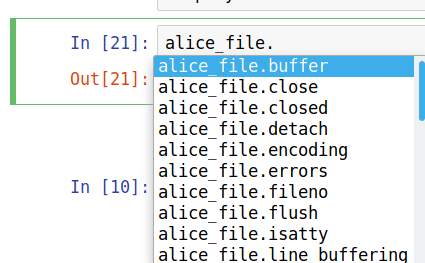

6 Python Introduction
Topics
- Reading data
- Basic functions
- Finding help
- Indexing data objects
- Working with text data
- Conditional operations
- Iterating over data structures
- Lists and dictionaries
6.1 Setup
6.1.1 Class Structure
- Informal — Ask questions at any time. Really!
- Collaboration is encouraged - please spend a minute introducing yourself to your neighbors!
6.1.2 Software & Materials
6.1.2.1 Install the Anaconda Python distribution
If using your own computer please install the Anaconda Python distribution from https://www.anaconda.com/download/. (Note that Python version\(\leq\) 3.0 differs considerably from more recent releases. For this workshop you will need version\(\geq\) 3.6.x)
Accepting the defaults proposed by the Anaconda installer is generally recommended.
6.1.2.2 Download materials
- Download class materials at https://github.com/IQSS/dss-workshops/raw/master/Python/PythonIntro.zip
- Extract materials from the zipped directory
PythonIntro.zip(Right-click => Extract All on Windows, double-click on Mac) and move them to your desktop!
6.1.3 Prerequisites
This is an introductory Python course:
- Assumes no knowledge of Python
- Relatively slow-paced
6.1.4 Learning Outcomes
- Python language basics and common idioms
- Reading files and manipulating data in Python
- Iterating over data structures
- Python package and application ecosystem
6.1.5 Workshop Outline
As an example project we will analyze the text of Lewis Carroll’s Alice’s Adventures in Wonderland. We will use Python to read data from this text file and then, working with nested data structures, ask the following questions:
- How many total and unique words are there?
- How many chapters and paragraphs?
- How many words are in each chapter, and what is the average words per chapter?
- How many times is each main character mentioned?
6.2 What is Python?
Python is a relatively easy to learn general purpose programming language. People use Python to manipulate, analyze, and visualize data, make web sites, write games, and much more. Youtube, DropBox, and BitTorrent are among the things people used python to make.
Like most popular open source programming languages, Python can be thought of as a platform that runs a huge number and variety of packages. The language itself is mostly valuable because it makes it easy to create and use a large number of useful packages.
A number of interfaces designed to make it easy to interact with Python are available. The Anaconda distribution that we installed earlier includes both a web-based Jupyter Notebook and a more conventional Integrated Development Environment called Spyder. For this workshop I encourage you to use Jupyter Notebook. In real life you should experiment and choose the interface that you find most comfortable.
6.3 Python basics
6.3.1 Launch Jupyter Notebook
- Start the
Anaconda Navigatorprogram - Click the
Launchbutton underJupyter Notebook - Click
upload, then in the pop-up window select thePythonIntrofolder on the desktop - Open and upload 3 files (note, this is TWO steps):
PythonIntro.ipnb,Alice_in_wonderland.txt, andCharacters.txt
A Jupyter Notebook contains one or more cells containing notes or code. To insert a new cell click the + button in the upper left. To execute a cell, select it and press Control+Enter or click the Run button at the top.
6.3.2 Reading data from a file
Reading information from a file is the first step in many projects, so we’ll start there. The workshop materials you downloaded earlier include a file named Alice_in_wonderland.txt which contains the text of Lewis Carroll’s Alice’s Adventures in Wonderland.
alice_file = open("Alice_in_wonderland.txt")6.3.3 Python functions
In Python functions perform tasks, and take the form:
# function_name(arg1, arg2, arg3, ... argn)where arg1 etc. are arguments to the function.
The open() function
We can use the open() function to create a file object that makes a connection to the file. This means that the alice_file object name we just created does not contain the contents of Alice_in_wonderland.txt. It is a representation in Python of the file itself rather than the contents of the file.
6.3.4 Assignment
In Python we can assign a result to an name using the = operator.
# objectName = thing_to_assign
x = 10The name on the left of the equals sign (alice_file) is one that we chose. When choosing names, they must:
- start with a letter
- use only letters, numbers and underscores
6.3.5 Object methods
The alice_file object provides methods that we can use to do things with it. Methods are invoked using syntax that looks like ObjectName.method(). You can see the methods available for acting on an object by typing the object’s name followed by a . and pressing the tab key. For example, typing alice_file. and pressing tab will display a list of methods as shown below.
.
Among the methods we have for doing things with our alice_file object is one named read. We can use the help function to learn more about it.
help(alice_file.read)Since alice_file.read looks promising, we will invoke this method and see what it does.
alice_txt = alice_file.read()
print(alice_txt[:500]) # the [:500] gets the first 500 character -- more on this later.That’s all there is to it! We’ve read the contents of Alice_in_wonderland.txt and stored this text in a Python object we named alice_txt. Now let’s start to explore this object, and learn some more things about Python along the way.
6.4 Counting chapters, lines, & words
Now that we have the text, we can start answering some questions about it. To begin with, how many words does it contain? To answer this question, we can split the text up so there is one element per word, and then count the number of words.
6.4.1 Splitting a string into a list of words
How do we figure out how to split strings in Python? We can ask Python what our alice_txt object is and what methods it provides. We can ask Python what things are using the type() function, like this:
type(alice_txt)Python tells us that alice_txt is of type str (i.e., it is a string). We can find out what methods are available for working strings by typing alice_txt. and pressing tab. We’ll see that among the methods is one named split, as shown below.
To learn how to use this method we can check the documentation.
help(alice_txt.split)Since the default is to split on whitespace (spaces, newlines, tabs) we can get a reasonable word count simply by calling the split method and counting the number of elements in the result.
alice_words = alice_txt.split() # returns a list (we talk about lists below)
type(alice_words)
len(alice_words) # counts elements in a data structure6.4.2 Using sets to calculate the number of unique words
According to our computation above, there are about 26 thousand total words in Alice’s Adventures in Wonderland. But how many unique words are there? Python has a special data structure called a set that makes it easy to find out. A set drops all duplicates, giving a collection of the unique elements.
len(set(alice_words))
# set example
mySet = {1, 5, 9, 9, 4, 5}
len(mySet)There are 5295 unique words in the text.
6.5 Exercise 0
Reading text from a file & splitting
Alice’s Adventures in Wonderland is full of memorable characters. The main characters from the story are listed, one-per-line, in the file named Characters.txt.
NOTE: we will not always explicitly demonstrate everything you need to know in order to complete an exercise. Instead we focus on teaching you how to discover available methods and how use the help function to learn how to use them. It is expected that you will spend some time during the exercises looking for appropriate methods and perhaps reading documentation.
Open the
Characters.txtfile and read its contents.Split text on newlines to produce a list with one element per line. Store the result as
alice_characters.
6.5.1 Working with lists
The split methods we used to break up the text of Alice in Wonderland into words produced a list. A lot of the techniques we’ll use later to analyze this text also produce lists, so its worth taking a minute to learn more about them.
It is always a good idea to know what type of data structure you’re working with in Python. As you gain experience, you won’t have to look these things up as often, but even experienced Python programmers use the type() function to learn about the objects they are working with.
type(alice_words)A list in Python is used to store a collection of items. As with other types in Python, you can get a list of methods by typing the name of the object followed by a . and pressing tab.
6.5.2 Extracting subsets from lists
Among the things you can do with a list is extract subsets using bracket indexing notation. This is useful in many situations, including the current one where we want to inspect a long list without printing out the whole thing.
The examples below show how indexing works in Python.
# syntax
# object[ start : end : by ]
# default
# object[ 0 : end : 1 ]Note that the displayed representation of lists and other data structures in python often closely matches the syntax used to create them. For example, we can create a list using square brackets, just as we see when we print a list:
# create a list
y = [1, "b", 3, "D", 5, 6]
y[0] # returns first element - the number 1 (yes, we count from zero!)
y[1] # returns second element - the letter "b"
y[ :3] # returns a list with only the first 3 elements, but index is of length 4 (0 to 3) because last index is excluded
y[2:5] # returns a list with elements 3, "D", 5
y[-1] # returns last element - the number 6
y[-4: ] # returns a list with last 4 elementsalice_words[11:20] # returns a list with words 11 through 19
alice_words[-10: ] # returns a list with the last 10 words6.5.3 Counting chapters & paragraphs
Now that we know how to split a string and how to work with the resulting list, we can split on chapter markers to count the number of chapters. All we need to do is specify the string to split on. Since each chapter is marked with the string 'CHAPTER ' followed by the chapter number, we can split the text up into chapters using this as the separator.
alice_chapters = alice_txt.split("CHAPTER ")
len(alice_chapters)Since the first element contains the material before the first chapter, this tells us there are twelve chapters in the book.
We can count paragraphs in a similar way. Paragraphs are indicated by a blank line, i.e., two newlines in a row. When working with strings we can represent newlines with \n. Paragraphs are indicated by two new lines, and so our basic paragraph separator is \n\n. We can see this separator by looking at the content.
print(alice_txt[:500]) # explicit printing --- formats text nicely
alice_txt[:500] # returns content without printing italice_paragraphs = alice_txt.split("\n\n")Before counting the number of paragraphs, I want to inspect the result to see if it looks correct:
print(alice_paragraphs[0], "\n==========")
print(alice_paragraphs[1], "\n==========")
print(alice_paragraphs[2], "\n==========")We’re counting the title, author, and chapter lines as paragraphs, but this will do for a rough count.
len(alice_paragraphs)6.6 Exercise 1
Count the number of main characters
So far we’ve learned that there are 12 chapters, around 830 paragraphs, and about 26 thousand words in Alice’s Adventures in Wonderland. Along the way we’ve also learned how to open a file and read its contents, split strings, calculate the length of objects, discover methods for string and list objects, and index/subset lists in Python. Now it is time for you to put these skills to use to learn something about the main characters in the story.
Count the number of main characters in the story (i.e., get the length of the list you created in previous exercise).
Extract and print just the first character from the list you created in the previous exercise.
6.7 Working with nested structures
Words within paragraphs within chapters
This far our analysis has treated the text as a “flat” data structure. For example, when we counted words we just counted words in the whole document, rather than counting the number of words in each chapter. If we want to treat our document as a nested structure, with words forming sentences, sentences forming paragraphs, paragraphs forming chapters, and chapters forming the book, we need to learn some additional tools. Specifically, we need to learn how to iterate over lists (or other collections) and do things with each element in a collection.
There are several ways to iterate in Python, of which we will focus on for loops.
6.7.1 Iterating over paragraphs using for-loops
A for loop is a way of cycling through the elements of a collection and doing something with each one. As a simple example, we can cycle through the first 6 paragraphs and print each one. Cycling through with a loop makes it easy to insert a separator between the paragraphs, making it much easier to read the output.
The for loop logic is:
The for loop syntax is:
for <thing> in <collection>:
do stuff with <thing>Notice that the body of the for-loop is indented. This is important, because it is this indentation that defines the body of the loop — the place where things are done. White space matters in Python! A simple example:
for i in range(10):
print(i)
print('DONE.') Notice that “DONE.” is only printed once, since print('DONE.') is not indented and is therefore outside of the body of the loop. An example using the Alice text:
for paragraph in alice_paragraphs[:6]:
print(paragraph)
print('==================================')
print('DONE.')Loops in Python are great because the syntax is relatively simple, and because they are very powerful. Inside of the body of a loop you can use all the tools you use elsewhere in python.
Here is one more example of a loop, this time iterating over all the chapters and calculating the number of paragraphs in each chapter.
for chapter in alice_chapters[1:]:
paragraphs = chapter.split("\n\n")
print(len(paragraphs))6.7.2 Organizing results in dictionaries
Our code for calculating the number of times “Alice” was mentioned per chapter worked, but with a little effort we can make it much easier to interpret by associating each count with the chapter it corresponds to. In Python we can use a dict (i.e., “dictionary”) to store key-value pairs.
The dictionary structure looks like:
mydict = {key1:value1, key2:value2, key3:value3}A simple example:
mydict = {"apple":5, "pear":6, "grape":10}
print(mydict)
# compare to a list
mylist =[5, 6, 10]
print(mylist)Now, with the Alice text, first we can iterate over each chapter and grab just the first line (that is, the chapter titles). These will become our keys.
container = [] # a list
for i in range(10):
container.append(i) # append elements to the list
print(container) chapter_names = []
for chapter in alice_chapters[1:]:
chapter_names.append(chapter.split(sep="\n")[0])
print(chapter_names)Finally we can combine the chapter names and counts and convert them to a dictionary.
# create counts for each chapter
chapter_Alice = []
for chapter in alice_chapters[1:]:
chapter_Alice.append(chapter.count("Alice"))
# combine names and counts
mydict = dict(zip(chapter_names,
chapter_Alice))
print(mydict)
help(zip) 6.8 Exercise 2
Iterating & counting things
Now that we know how to iterate using for-loops, the possibilities really start to open up. For example, we can use these techniques to count the number of times each character appears in the story.
- Make sure you have both the text and the list of characters.
Open and read both “Alice_in_wonderland.txt” and “Characters.txt” if you have not already done so.
- Which chapter has the most words?
Split the text into chapters (i.e., split on “CHAPTER”) and use a for-loop to iterate over the chapters. For each chapter, split it into words and calculate the length.
- How many times is each character mentioned in the text?
Iterate over the list of characters using a for-loop. For each character, call the count method with that character as the argument.
- (BONUS, optional): Put the character counts computed above in a dictionary with character names as the keys and counts as the values.
6.9 Importing numpy & calculating simple statistics
Now that we know how to iterate over lists and calculate numbers for each element, we may wish to do some simple math using these numbers. For example, we may want to calculate the mean and standard deviation of the distribution of the number of paragraphs in each chapter. Python has a handful of math functions built-in (e.g., min() and max()) but built-in math support is pretty limited.
When you find that something isn’t available in Python itself, its time to look for a package that does it. Although it is somewhat overkill for simply calculating a mean we’re going to use a popular package called numpy for this. The numpy package is included in the Anaconda Python distribution we are using, so we don’t need to install it separately.
To use numpy or other packages, you must first import them.
import <package-name>We can import numpy as follows:
import numpyTo use functions from a package, we can prefix the function with the package name, separated by a period:
<package-name>.<function_name>()The numpy package is very popular and includes a lot of useful functions. For example, we can use it to calculate means and standard deviations:
print(numpy.mean(paragraphs_per_chapter))
print(numpy.std(paragraphs_per_chapter))6.10 Exercise solutions
6.10.1 Ex 0: prototype
# 1. Open the Characters.txt file and read its contents.
characters_file = open("Characters.txt")
characters_txt = characters_file.read()
# 2. Split text on newlines to produce a list with one element per line.
# Store the result as "alice_characters".
alice_characters = characters_txt.split(sep="\n")
alice_characters6.10.2 Ex 1: prototype
# 1. Count the number of main characters in the story (i.e., get the length of the list you created in previous exercise).
len(alice_characters)
# 2. Extract and print just the first character from the list you created in the previous exercise.
print(alice_characters[0])
# 3. (BONUS, optional): Sort the list you created in step 2 alphabetically,
# and then extract the last element.
alice_characters.sort()
alice_characters[-1]6.10.3 Ex 2: prototype
# 1. Make sure you have both the text and the list of characters.
# Open and read both "Alice_in_wonderland.txt" and "Characters.txt" if you have not already done so.
characters_txt = open("Characters.txt").read()
alice_txt = open("Alice_in_wonderland.txt").read()
# 2. Which chapter has the most words?
# Split the text into chaptes (i.e., split on "CHAPTER ") and use a for-loop to iterate over the chapters.
# For each chapter, split it into words and calculate the length.
words_per_chapter = []
for chapter in alice_chapters:
words_per_chapter.append(len(chapter.split()))
words_per_chapter
# 3. How many times is each character mentioned in the text?
# Iterate over the list of characters using a for-loop.
# For each character, call the count method with that character as the argument.
num_per_character = []
for character in characters_txt.split(sep="\n"):
num_per_character.append(alice_txt.count(character))
num_per_character
# 4. (BONUS, optional): Put the character counts computed above in a
# dictionary with character names as the keys and counts as the values.
characters = characters_txt.split(sep="\n")
dict(zip(characters, num_per_character))6.11 Wrap-up
6.11.1 Feedback
These workshops are a work in progress, please provide any feedback to: help@iq.harvard.edu
6.11.2 Resources
- IQSS
- Workshops: https://dss.iq.harvard.edu/workshop-materials
- Data Science Services: https://dss.iq.harvard.edu/
- Research Computing Environment: https://iqss.github.io/dss-rce/
- HBS
- Research Computing Services workshops: https://training.rcs.hbs.org/workshops
- Other HBS RCS resources: https://training.rcs.hbs.org/workshop-materials
- RCS consulting email: mailto:research@hbs.edu
- Graphics
- matplotlib: https://matplotlib.org/
- seaborn: https://seaborn.pydata.org/
- plotly: https://plot.ly/python/
- Quantitative Data Analysis
- numpy: http://www.numpy.org/
- scipy: https://www.scipy.org/
- pandas: https://pandas.pydata.org/
- scikit-learn: http://scikit-learn.org/stable/
- statsmodels: http://www.statsmodels.org/stable/
- Text analysis
- textblob: https://textblob.readthedocs.io/en/dev/
- nltk: http://www.nltk.org/
- Gensim: https://radimrehurek.com/gensim/
- Webscraping
- scrapy: https://scrapy.org/
- requests: http://docs.python-requests.org/en/master/
- lxml: https://lxml.de/
- BeautifulSoup: https://www.crummy.com/software/BeautifulSoup/
- Social Network Analysis
- networkx: https://networkx.github.io/
- graph-tool: https://graph-tool.skewed.de/